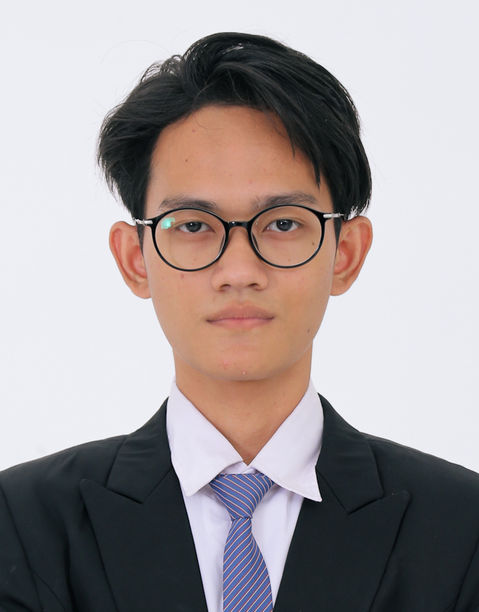

Saya adalah lulusan SMA jurusan IPS pada 2023 silam, saya mulai menyadari ketertarikan saya dengan dunia Informasi Teknologi ketika bekerja di perusahaan IT penyedia sistem ERP berbasis SaaS untuk travel umrah dan haji. Sehubungan dengan itu, saya memantapkan diri untuk menjadi mahasiswa PENS dalam upaya mengembangkan pengetahuan saya di dunia Teknik Informatika.
Github: coradesk